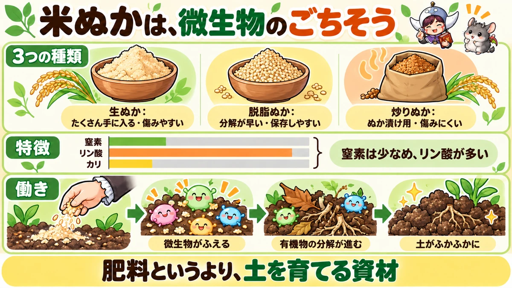
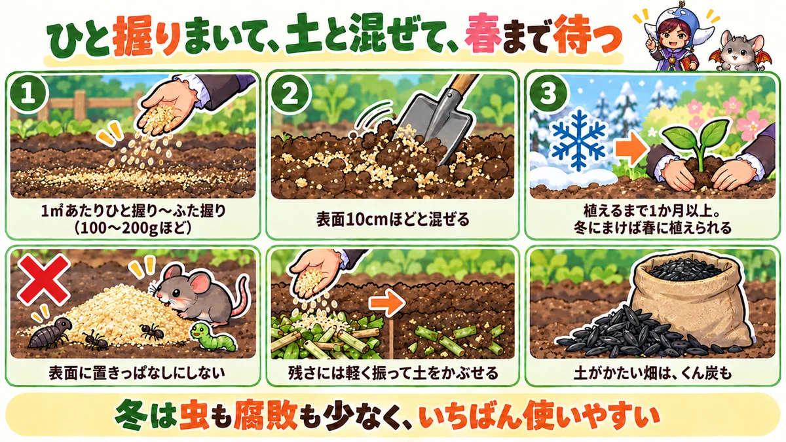
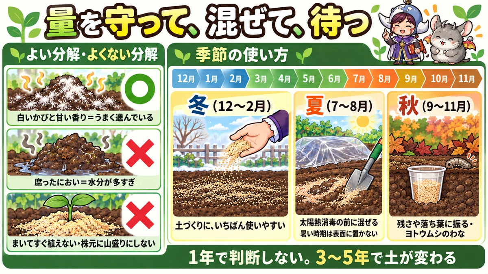

米ぬかの使い方 決定版｜生ぬかと脱脂ぬかの違い、土づくりの量と時期、失敗しない注意点
📖 この記事の目次
この記事で分かること
- 米ぬかは、玄米を精米するときに出る粉です。安く、ときには無料で手に入り、畑の土づくりに役立ちます。
- 肥料としては、窒素は少なめで、リン酸を多く含むのが特徴です。じっくり効き、効きすぎの心配が少ない資材です。
- いちばんの働きは、土の中の微生物のえさになること。微生物が増えると、有機物の分解が進み、土がふかふかになっていきます。
- 使いやすいのは冬。気温が低く雨も少ないので、虫がわいたり腐ったりしにくく、春までにちょうどよく分解が進みます。
- 量の目安は、1㎡あたりひと握り〜ふた握り（100〜200gほど）。多ければよいわけではありません。
- 生の米ぬかをまいてすぐにタネをまいたり苗を植えたりすると、分解のときの熱やガスで根を傷めることがあります。植えるまでに間をあけます。
- 野菜くずや落ち葉の分解を早めたり、ヨトウムシのわなにしたり、使い道はいろいろあります。
「米ぬかが土づくりにいいらしい」と聞いて、試してみたい方は多いと思います。スーパーのぬか漬けの売り場や、コイン精米所で手に入る身近なものなのに、畑で使うとなると、「どのくらいまけばいいのか」「まいてすぐ植えていいのか」「虫がわかないか」と、分からないことがたくさんあります。
米ぬかは、使い方を知っていれば、安くて扱いやすい頼もしい資材です。一方で、使い方を間違えると、虫がわいたり、苗の根を傷めたりすることもあります。この記事では、米ぬかの種類と手に入れ方から、土づくり、野菜くずの分解、季節ごとの使い方、失敗しないための注意点まで、順番に書いていきます。米ぬかを発酵させて作る「ぼかし肥料」は別の話になるので、ここではくわしくは書かず、米ぬかをそのまま使う方法を中心にします。
早見：米ぬかの使い方の基本
米ぬかの種類
- 生ぬか：精米したそのままの米ぬか。油分を含み、分解に時間がかかる。傷みやすい
- 脱脂ぬか：油分をしぼったあとの米ぬか。粒状にしたものもある。分解が早く、保存しやすい
- 炒りぬか：炒って保存性を高めたもの。ぬか漬け用に売られていることが多い
量の目安
- 土づくり：1㎡あたりひと握り〜ふた握り（100〜200gほど）
- 野菜くずや落ち葉の分解：表面にうっすら振る程度
- もみ殻くん炭といっしょに：くん炭は1㎡あたり50〜100gほど
時期の目安（一般的な地域）
- 土づくりにまく：冬（12〜2月）がいちばん使いやすい。植えつけの1か月以上前、できれば3か月ほど前
- 野菜くずの分解：収穫のあと、片づけたときに
- 太陽熱消毒に加える：夏（7〜8月）
気をつけること
- まいてすぐに、タネまきや植えつけをしない
- 一度にたくさんまかない
- まいたら土と混ぜる。表面に厚く積んだままにしない
- 湿らせたまま放置すると腐る。生ぬかは早めに使う

米ぬかとは
精米のときに出る粉
米ぬかは、玄米を精米して白米にするときに、けずり取られる外側の部分と、胚芽の部分が粉になったものです。お米の外側には、栄養がたくさんつまっています。だから、白米として食べる部分以外の栄養が、米ぬかに集まっていることになります。
生ぬか、脱脂ぬか、炒りぬか
畑で使う米ぬかには、主に3つの種類があります。
- 生ぬか：精米したそのままのもの。コイン精米所などで手に入るのはこれです。油分を含んでいて、きめが細かくしっとりしています。分解には少し時間がかかり、湿気を吸うと傷みやすいのが弱点です。
- 脱脂ぬか：生ぬかから油分をしぼり取ったものです。肥料として売られているものに多く、粒状になったものもあります。油分がないぶん、水がしみこみやすく、分解も早く、保存もしやすくなっています。
- 炒りぬか：生ぬかを炒って、傷みにくくしたものです。スーパーのぬか漬けの売り場などで売られています。
どれを使っても、畑の土づくりには役立ちます。油分があるかないかで分解の早さや扱いやすさが少し違う、と考えておけば十分です。生ぬかで虫やにおいが心配な場合は、脱脂ぬかや炒りぬかを選ぶと扱いやすくなります。
手に入れ方
- コイン精米所：精米機の横に、米ぬかを自由に持ち帰れるようにしているところがあります。無料でたくさん手に入ることもあります。
- スーパー：ぬか漬け用の米ぬかが、粉もの売り場などで売られています。少量から手に入ります。
- 園芸店、ホームセンター：肥料として、脱脂ぬかなどが売られています。
- お米屋さん：精米のときに出た米ぬかを分けてくれるところもあります。
肥料としての特徴
米ぬかには、植物の育ちに必要な窒素、リン酸、カリが含まれています。一般に、窒素が2〜3%、リン酸が4〜6%、カリが1〜1.5%ほど含まれていると言われます（製品によって違います）。ほかの有機の肥料と比べると、窒素が少なめで、リン酸が多いのが特徴です。リン酸は、花や実のつき、根の育ちにかかわる養分です。
また、カルシウムやマグネシウムなどのミネラルも含んでいます。
窒素が少なめなので、たくさんまいても、葉ばかり茂る「効きすぎ」になりにくいのが良いところです。一方で、すぐに効く肥料ではありません。米ぬかは、微生物に分解されてから、少しずつ野菜に吸われていきます。
保存のしかた
生ぬかは、湿気を吸うと、においが出たり、かびが生えたり、虫がわいたりします。
- 袋の口をしっかり閉じて、湿気の少ない涼しい場所に置く
- まとめてもらってきたら、なるべく早めに使う
- すぐに使わない分は、脱脂ぬかや炒りぬかにするなど、保存しやすいものを選ぶ
ほかの有機の資材との違い
家庭菜園でよく使う有機の資材と比べると、米ぬかの立ち位置が分かりやすくなります。
- 油かす：窒素が多く、葉を育てる力が強い。効きはゆっくりだが、量が多いと効きすぎる
- 鶏ふん：窒素やリン酸、カルシウムを含み、比較的早く効く。まきすぎると効きすぎや肥料焼けの心配がある
- 堆肥・腐葉土：養分は少なめで、土そのものをふかふかにする役割が中心
- 米ぬか：窒素は少なめ、リン酸が多い。微生物のえさになって土をよくする働きが大きい。養分のバランスは、肥料と堆肥の中間くらい
米ぬかは、「肥料」として野菜に直接養分を与えるというより、「土の中の生き物を元気にして、土を育てる」資材と考えると、使い方を間違えにくくなります。
米ぬかの働き
微生物のえさになる
米ぬかのいちばんの働きは、土の中の微生物のえさになることです。米ぬかには、微生物が好む糖分やたんぱく質、ミネラルがたくさん含まれています。米ぬかを土に入れると、それを食べて微生物が増えていきます。
ぬか漬けを思い浮かべると分かりやすいかもしれません。ぬか床の中では、米ぬかをえさに乳酸菌などが増えて、野菜をおいしく漬けてくれます。畑の土の中でも、同じように、米ぬかをえさに微生物が増えていきます。
有機物の分解を早める
微生物が増えると、土の中の落ち葉や野菜の根、刈った草などの有機物が、早く分解されるようになります。野菜くずや落ち葉を積んで分解させるときに米ぬかを振ると、分解が早く進むのは、このためです。
土をふかふかにする
微生物が有機物を分解するときには、のりのような物質が作られます。これが土の細かい粒どうしをくっつけて、小さなかたまり（団粒）を作ります。団粒の多い土は、すき間が多く、水はけと水もちの両方がよくなり、根が伸びやすい、ふかふかの土になります。
じっくり効く
米ぬかの養分は、微生物が分解してから、少しずつ野菜に届きます。だから、ゆっくり、長く効きます。植えつけの1か月以上前に元肥として入れておけば、追肥をあまりしなくても育てられる、という考え方もあります。
使い方1：冬の土づくり
冬がいちばん使いやすい
生の米ぬかは、気温が高く湿った時期に使うと、虫がわいたり、腐ったりしやすくなります。冬は、気温が低く雨も少ないので、こうした心配が少なくなります。冬にまいておけば、春までの間に、じわじわと分解が進み、ちょうどよい状態の土になっていきます。
秋冬野菜の収穫が終わって空いた場所や、春に夏野菜を植える予定の場所に、冬のうちにまいておくのがおすすめです。
まき方
1．空いた場所の残った根や草を片づけます。
2．1㎡あたりひと握り〜ふた握り（100〜200gほど）を目安に、表面にぱらぱらと、なるべく均等にまきます。
3．くわやスコップで、表面の土と軽く混ぜます。深くすきこまず、表面から10cmほどの土に混ぜるくらいで十分です。
4．乾いていれば、軽く水をかけておきます。
まいた米ぬかを表面に厚く積んだままにすると、そこにかびが厚く生えたり、虫が集まったり、鳥やネズミが食べに来たりします。必ず土と混ぜておきます。
土がかたい畑では、もみ殻くん炭も
土がかたい畑や、水はけの悪い畑では、米ぬかといっしょに、もみ殻くん炭（もみ殻を低い温度で焼いて炭にしたもの）をまく方法もあります。くん炭は、細かい穴がたくさんあいていて、微生物のすみかになり、米ぬかで増えた微生物がはたらきやすくなります。1㎡あたり50〜100gほどが目安です。特に土がかたい場合は、焼いていないもみ殻をそのまま混ぜて、すき間を作るのもよい方法です。
残さがある場合は、上から土をかける
畑に収穫のあとの残さや枯れた草が残っている場合は、それを細かく刻んで広げ、上から米ぬかを軽くまいて、さらに土をかぶせておく方法もあります。土をかぶせることで、残さが乾きすぎず、微生物がはたらきやすくなり、米ぬかが風で飛んだり、虫が集まったりするのも防げます。
冬の大根の葉を敷く
冬に収穫した大根の、かたくて食べられない外側の葉を、うね間などに敷いておくと、ゆっくり枯れて分解し、土に返っていきます。冬は雨が少なく乾き気味なので、夏のように腐って虫が集まることも少なくなります。米ぬかを少し振っておくと、分解が早まります。
植えるまでの間をあける
生の米ぬかを土に入れると、微生物が一気に増えて分解が始まります。このとき、熱やガスが出ることがあり、そこにタネをまいたり苗を植えたりすると、芽が出なかったり、根が傷んだりすることがあります。
だから、米ぬかを入れてから植えるまでは、間をあけます。少なくとも1か月以上、できれば3か月ほどあけるのが安心だと言われています。冬にまいて春に植える、という使い方なら、この間が自然にとれます。
春になったら
冬に米ぬかをまいた場所は、春に植えつけの準備をするとき、次のことを確かめます。
1．土を手に取って、においをかぎます。土の香りがして、米ぬかの粉がほとんど見えなくなっていれば、分解が進んでいます。
2．米ぬかのかたまりが残っていたり、腐ったようなにおいがしたりする場合は、もう少し時間をおくか、よく耕して空気を入れます。
3．植えつけの2〜3週間前に、必要なら堆肥や元肥を足して、うねを作ります。
4．うねを作ったら、植えつけまで少し落ちつかせてから植えます。
土の手ざわりが、冬の前よりもやわらかく、しっとりしていると感じられれば、米ぬかがよくはたらいたしるしです。
大がかりな作業をしない冬の土づくり
冬の土づくりというと、深く掘って上下の土を入れかえる「天地返し」や、土を大きく掘り起こして寒さに当てる「寒起こし」を思い浮かべる方も多いと思います。どちらも、土がかたい、水はけが悪い、病気や虫が多かった、という場所には効果があります。
一方、もともと水はけがよく、土がやわらかい場所なら、大がかりな作業をしなくても、米ぬかを表面にまいて浅く混ぜ、微生物を元気にしておくだけで、春まで土のよい状態を保てる、という考え方もあります。毎年すべての場所を深く掘る必要はありません。土の状態を見て、作業を選んでください。
ほかの資材といっしょに
冬の土づくりでは、米ぬかといっしょに、堆肥や腐葉土を入れることも多いです。堆肥や腐葉土は土そのものをふかふかにし、米ぬかはそれを分解する微生物を元気にする、と役割を分けて考えると分かりやすくなります。石灰を入れる場合は、米ぬかと同じ日にまくより、時期をずらすと扱いやすくなります。

使い方2：野菜くずや落ち葉の分解を早める
残さに振る
収穫が終わった野菜の茎や葉、根（残さ）を、畑のすみに積んで分解させるとき、米ぬかを上から軽く振っておくと、分解が早く進みます。豆の仲間の残さなどは、よい堆肥の材料になります。
- 残さは、なるべく細かく切ってから積む。大きいままだと、すき間が多く分解に時間がかかる
- 米ぬかは、表面がうっすら白くなるくらいに軽く振る
- 乾いていれば水をかけて、しっとりさせる
- ときどき切り返して、空気を入れる
残さ堆肥の作り方
畑のすみで、残さと米ぬかを使って堆肥を作る手順です。
1．畑のすみに、残さを積む場所を決めます。囲いがあると、くずれにくく扱いやすくなります。
2．残さを細かく切り、20〜30cmほどの厚さに広げます。
3．上から米ぬかを、うっすら白くなるくらいに振ります。
4．じょうろで水をかけて、手でにぎると少しまとまるくらいに湿らせます。
5．残さ、米ぬか、水、と何層か重ねていきます。
6．1〜2か月に1回くらい、全体を切り返して空気を入れます。
7．もとの形が分からなくなり、黒っぽく、土のようなにおいになったらでき上がりです。畑に入れる前に、ふるいにかけて、分解しきっていない大きなものは山に戻します。
病気が出た株や、タネをつけた雑草は、堆肥の山に入れないほうが安心です。
振りすぎない
早く分解させたいからと米ぬかをたくさん振ると、かえって虫がわいたり、空気が足りなくなって腐ったようなにおいが出たりします。振るのは、うっすらで十分です。
落ち葉にも
秋に集めた落ち葉を積んで腐葉土にするときも、米ぬかを少し振っておくと、分解が早まります。落ち葉、米ぬか、落ち葉、米ぬか、と層にして積み、水をかけて湿らせておきます。
使い方3：そのほかの使い方
夏の太陽熱消毒に加える
夏の強い日差しを使って、土に透明のマルチをかぶせて温め、土の中の虫や雑草のタネを減らす「太陽熱消毒」をするときに、米ぬかを混ぜてから行う方法があります。米ぬかで微生物が増えて土の温度が上がりやすくなる、消毒のあとに土の状態がよくなる、と考えられています。秋冬野菜の前の準備として、7〜8月に行います。
ヨトウムシのわなに
米ぬかには、ヨトウムシが寄ってくる、と言われています。紙コップに米ぬかを入れて、株元から少し離れたところに口を地面と同じ高さにして埋め、上にふたをかぶせておくと、中に入りこんだヨトウムシを取ることができます。数日ごとに中を見て、入った虫を取ります。
ぼかし肥料の材料に
米ぬかは、ぼかし肥料（有機の材料を発酵させて作る肥料）の主な材料にもなります。冬は、袋に入れて口を閉じ、空気を入れずにゆっくり発酵させる作り方が、手間がかからず向いています。くわしい作り方は、ぼかし肥料の記事にまとめています。
通路にまく
通路に米ぬかを薄くまいておくと、米ぬかで増えた微生物が、病気の元になる菌が増えるのを抑える、という考え方で使う人もいます。効き目のほどは、はっきりとは分かっていないので、試すなら少量にとどめます。
米ぬかのままか、ぼかしにするか
- 米ぬかのまま使うのがよい場面：冬の土づくり、残さや落ち葉の分解、植えるまで時間がとれるとき
- ぼかしにしてから使うのがよい場面：追肥、植えるまで時間がとれないとき、暖かい時期、プランター
ぼかし肥料は、米ぬかをあらかじめ発酵させておくことで、畑に入れてからの熱やガス、虫の心配を減らしたものです。作る手間はかかりますが、使える場面が広がります。
米のとぎ汁を使う方法
近くにコイン精米所がなく、米ぬかが手に入りにくい場合は、米のとぎ汁を使う方法もあります。とぎ汁には、米ぬかや、お米のでんぷんが溶け出していて、畑にまくと微生物のえさになります。
- 冬の空いた畑に、うすめずにそのまま土にまく
- 水やりの代わりに使う場合は、5〜10倍にうすめる
- 気温の高い時期は、虫がわいたり、かびが生えたり、においが出たりしやすいので、寒い時期に使う
米ぬかほどの量の養分はありませんが、毎日の台所で出るものを無駄なく使えるのが良いところです。
追肥に使うときの注意
生の米ぬかを株元に直接まかない
育てている野菜の株元に、生の米ぬかを直接たくさんまくと、分解のときの熱やガスで根を傷めたり、虫が集まったりすることがあります。追肥として使うなら、次のようにします。
- 株から少し離れたところに、少量を、円を描くようにまき、表面の土と軽く混ぜる
- 一度にたくさんまかない
- 発酵させたぼかし肥料にしてから使う（分解が進んでいるので、根を傷めにくく、早く効く）
冬の追肥に
アスパラガスやにらなど、冬に地上部が枯れて休む野菜は、冬の間に株のまわりに肥料を入れておく（寒肥）と、春に芽が伸びるころに効いてきます。米ぬかや、米ぬかで作ったぼかし肥料を、株から少し離して入れるのは、こうした冬の追肥に向いた使い方です。
失敗しないための注意点
発酵の熱とガス
米ぬかが分解されるときには、熱が出ます。また、空気の少ないところで分解が進むと、根に悪いガスが出ることがあります。まいてすぐに植えない、厚く積まない、土とよく混ぜる、の3つを守れば、心配はぐっと減ります。
虫がわく
生の米ぬかは、虫を呼びやすい資材です。表面に置いたままにすると、ハエの幼虫（うじ）や、コバエ、ネキリムシなどが集まることがあります。暖かい時期は特に注意が必要です。
- まいたら、土とよく混ぜる
- 暖かい時期は、量を少なめにする
- 冬に使う
腐ったようなにおい
米ぬかが水分を多く含んだまま、空気の少ない状態で置かれると、腐ったようなにおいが出ます。これは、よい発酵ではなく、腐敗に向かっているしるしです。混ぜて空気を入れる、乾いた土や落ち葉を足して水分を減らす、などで立て直します。
一方、白いかびがふわっと生えて、甘いような香りがするのは、うまく分解が進んでいるしるしで、心配いりません。
まく量を量る目安
「ひと握り」は人によって差があるので、はじめのうちは一度量っておくと安心です。家庭の台所用のはかりで、自分の手でひと握りした米ぬかが何gになるかを確かめておくと、次からは目分量でも量を大きく外さずにすみます。1㎡は、たて1m・よこ1mの広さです。うねの長さと幅から広さを出して、必要な量を先に用意しておくと、まきすぎを防げます。
ネズミや鳥
生の米ぬかを表面に置いたままにすると、においにつられて、ネズミや鳥が食べに来ることがあります。土と混ぜておけば、ほとんど心配ありません。
分解の途中は、野菜の育ちが鈍ることも
米ぬかが分解される途中は、土の中で微生物が増え、窒素などの養分を使います。このため、分解が進んでいる最中に植えた野菜は、一時的に養分が足りず、育ちが鈍ることがある、という説明もあります。植えるまでに間をあけるのは、この点でも安心です。

季節ごとの使い方（一般的な地域の目安）
- 12〜2月：空いた場所にまいて土と混ぜる（いちばん使いやすい時期）。アスパラやにらの冬の追肥。冬のぼかし肥料づくり
- 3〜4月：冬にまいた場所に、夏野菜を植える。新しくまく場合は、植える1か月以上前に
- 5〜6月：暖かくなるので、生の米ぬかは量を少なめに。残さに振って分解を早める
- 7〜8月：太陽熱消毒の前に混ぜる。暑い時期は虫がわきやすいので、表面に置かない
- 9〜10月：秋冬野菜の植えつけ前は、間をあけられるかを考えて使う。ヨトウムシのわな
- 11月：夏野菜の残さや落ち葉に振って、堆肥や腐葉土づくり
野菜との相性
肥料を控えめに育てる野菜に
米ぬかは、窒素が少なめで、じっくり効く資材です。トマト、すいか、にんじん、大根など、肥料が多すぎると葉ばかり茂ったり、味がぼやけたりしやすい野菜の土づくりに向いている、と考える人もいます。
肥料をたくさん使う野菜には
なすやきゅうり、葉物など、肥料をたくさん使う野菜は、米ぬかだけでは養分が足りないことがあります。堆肥やほかの有機の肥料と組み合わせたり、追肥をしたりして補います。
じゃがいも
じゃがいもの土づくりにも、米ぬかがよく使われます。土がふかふかになることに加えて、芋の表面にかさぶたのような跡ができる「そうか病」が出にくくなる、と言われています。植えつけの2〜3週間前までに米ぬかをまいて、土とよく混ぜておきます。春や秋のじゃがいもの植えつけ前は、気温が上がる時期と重なることがあるので、まいたらすぐに混ぜて、表面に残さないようにします。
豆の仲間
えだまめやえんどうなどの豆の仲間は、もともと肥料が少なくても育つ野菜です。米ぬかを入れる場合も、少なめにします。
長い目で見る
1年目は、思ったほど変わらないことも
米ぬかを使った土づくりを始めた最初の年は、それまでの土の状態によっては、野菜の育ちが少し遅くなったり、収穫が思ったほど増えなかったりすることもあります。米ぬかは、土の中の生き物を少しずつ育てていく資材なので、効き目がはっきり出るまでに時間がかかるのです。
1年でやめてしまわず、冬の土づくりを毎年続けていくと、3年から5年ほどで、土の状態がよく変わっていく、と言われています。土の手ざわり、水のしみこみ方、ミミズの数など、毎年の変化を栽培の記録に残しておくと、変化に気づきやすくなります。
説明が分かれるところ
生の米ぬかを、そのまま畑に使うか
「冬に表面にまいて土と混ぜれば、そのまま使える」という考え方と、「生のまま畑に入れると、虫や発酵熱、育ちの鈍りが心配なので、ぼかし肥料にしてから使う」という考え方があります。
冬に使う、量を控える、植えるまで間をあける、を守れば、生のままでも使いやすくなります。暖かい時期や、植えるまでの時間がとれない場合は、ぼかし肥料にしてから使うほうが安心です。
植えるまで、どのくらいあけるか
「2週間ほど」「1か月以上」「3か月ほど」と、説明はいろいろです。気温が高いほど分解は早く進み、低いほどゆっくりです。冬にまいて春に植えるなら、自然に3か月ほどあくので、どちらの説明にもかないます。
野菜がおいしくなるか
米ぬかで育てると、野菜の味がよくなった、甘くなった、という声があります。土の状態がよくなり、肥料が効きすぎないことが、味に影響すると考える人もいますが、はっきり確かめるのはむずかしいところです。
よくある失敗
まいてすぐに植えた
分解のときの熱やガスで、芽が出ない、根が傷む、ということがあります。植えるまでに間をあけます。
たくさんまけばよいと思った
多すぎると、虫がわく、腐る、分解の途中で野菜の育ちが鈍る、といった失敗につながります。1㎡あたりひと握り〜ふた握りが目安です。
表面に置いたままにした
かびが厚く生えたり、虫やネズミ、鳥が集まったりします。まいたら土と混ぜます。
夏に生ぬかを使った
暑い時期は、虫がわきやすく、腐りやすくなります。夏は量を減らすか、冬に回します。
湿ったまま袋に入れて置いておいた
傷んで、においが出て、虫がわきます。生ぬかは乾いた場所に置き、早めに使います。
よくある質問
コイン精米所の米ぬかは、自由に持ち帰っていいのですか
精米所によって決まりが違います。「ご自由にお持ちください」と書かれているところもあれば、持ち帰りを断っているところもあります。張り紙を確かめ、分からなければ管理している人に聞いてから持ち帰ります。
生ぬかと脱脂ぬか、どちらがよいですか
どちらでも使えます。たくさん手に入れたいなら、コイン精米所の生ぬか。虫やにおいが心配なら、脱脂ぬかや炒りぬか。分解の早さと扱いやすさで選んでください。
プランターでも使えますか
使えます。ただ、プランターは土の量が少なく、分解のときの熱や虫の影響を受けやすいので、ほんの少量にします。次の作付けまで時間があるときに土に混ぜておき、間をあけてから使います。
石灰の代わりになりますか
米ぬかにもカルシウムなどのミネラルは含まれていますが、土の酸っぱさを整える力は、石灰ほどではありません。酸性に弱い野菜を育てる場合は、土の酸っぱさを測って、必要なら石灰も使います。
米ぬかを入れたら、ほかの肥料は要りませんか
米ぬかだけでは、野菜によっては養分が足りません。特に、窒素を多く使う野菜は、ほかの肥料や追肥で補います。米ぬかは、土の微生物を元気にして土をよくする資材、と考えると使いやすくなります。
古いぬか床を畑に使えますか
使わないほうが安心です。ぬか漬けのぬか床には、塩がたくさん入っています。塩分が畑の土に入ると、野菜の根が水を吸いにくくなり、育ちが悪くなります。畑に使うのは、塩の入っていない米ぬかにします。
もみ殻くん炭や堆肥と、いっしょにまいてもいいですか
いっしょにまいてかまいません。堆肥や腐葉土は土をふかふかにし、くん炭は微生物のすみかになり、米ぬかは微生物のえさになる、と、それぞれの役割が違うので、組み合わせると効果が出やすくなります。石灰だけは、米ぬかと同じ日にまくより、時期を少しずらすと扱いやすくなります。
寒い時期にまいても、分解は進みますか
気温が低い時期は、分解はゆっくり進みます。それが、冬に米ぬかを使う良いところでもあります。急に熱やガスが出ることも、虫がわくことも少なく、春に向けて暖かくなるにつれて、少しずつ分解が進んでいきます。
たくさんもらってきました。どう保存すればいいですか
生ぬかは、湿気を吸うと傷みます。厚手の袋に入れて口をしっかり閉じ、雨の当たらない、涼しく乾いた場所に置きます。すぐに使いきれない量なら、冬の土づくりにまとめて使う、残さ堆肥に混ぜる、ぼかし肥料にする、など、早めに使い道を決めておきます。夏に長く置いておくと、虫がわきやすくなります。
雨の前にまいたほうがいいですか
米ぬかは、適度に湿っていると分解が進みます。乾いた時期は、まいて土と混ぜたあとに軽く水をかけるか、雨の前日にまいておくと、なじみやすくなります。ただし、大雨の前は、表面の米ぬかが流れてしまうことがあるので、土とよく混ぜておきます。
毎年まき続けても大丈夫ですか
米ぬかは窒素が少なめで、効きすぎの心配が少ない資材ですが、毎年たくさん入れ続けると、リン酸などの養分がたまっていくこともあります。量の目安を守り、ほかの資材とのバランスを見ながら使います。土の状態が気になるときは、土の酸っぱさや養分を測る簡単な道具を使ってみるのもよい方法です。
白いかびが生えました。大丈夫ですか
白いかびがふわっと生えて、甘いような香りがするなら、分解がうまく進んでいるしるしです。土と混ぜておけば問題ありません。腐ったようなにおいがする場合は、水分が多すぎるので、混ぜて空気を入れ、乾いた土を足します。
学ぶ：米ぬかのしくみ🔬
なぜ、微生物が一気に増えるのか
土の中の微生物の多くは、ふだんは食べ物が少なく、じっとしています。そこへ、糖分やたんぱく質が多く、細かい粉で食べやすい米ぬかが入ると、たちまちえさが豊富になり、微生物が一気に増えはじめます。米ぬかが「微生物のごちそう」と言われるのは、このためです。
なぜ、リン酸が多いのか
お米の粒は、芽を出して育つための養分を、胚芽と、粒の外側の層にたくわえています。リンもその1つで、種が芽を出すときに使えるよう、外側の層や胚芽に多く集まっています。精米で白米になるときに、この外側の層と胚芽がけずり取られて米ぬかになるので、米ぬかにはリン酸が多く含まれることになります。種の「芽を出すための貯え」が、畑では土の養分になるわけです。
なぜ、熱が出るのか
微生物は、えさを分解するときに、エネルギーを使い、その一部が熱になって外に出ます。微生物が一気に増えて、たくさんのえさを分解すると、その熱がまとまって、土や積んだ材料の温度が上がります。堆肥の山を掘ると湯気が出るのも、同じしくみです。この熱が、まいてすぐの苗の根を傷める原因にもなります。
なぜ、空気が大切なのか
微生物には、空気（酸素）を使って分解するものと、空気のないところで分解するものがいます。空気がたっぷりあると、においの少ない、よい分解が進みます。米ぬかを厚く積んだり、水分が多すぎたりして空気がなくなると、空気を使わない微生物の分解が中心になり、腐ったようなにおいや、根に悪いガスが出やすくなります。米ぬかを土とよく混ぜ、湿らせすぎないのは、空気を届けるためなのです。
まとめ
ここまで読んでくださって、ありがとうございます！
米ぬかの使い方のポイントを、もう一度まとめておきます。
- 米ぬかは、精米のときに出る粉。生ぬか・脱脂ぬか・炒りぬかがあり、どれも使える
- 窒素は少なめ、リン酸が多い。じっくり効き、効きすぎにくい
- いちばんの働きは、微生物のえさになること。土がふかふかになっていく
- 使いやすいのは冬。1㎡あたりひと握り〜ふた握りをまき、表面の土と混ぜる
- まいてすぐに植えない。1か月以上、できれば3か月ほど間をあける
- 野菜くずや落ち葉に軽く振ると、分解が早まる
- 株元に生のまま直接たくさんまかない。追肥はぼかしにするか、株から離して少量
- 表面に置きっぱなし、湿らせたまま放置、は虫と腐敗のもと
- 白いかびと甘い香りはよい分解。腐ったにおいは水分が多すぎるしるし
- 土がかたい畑は、もみ殻くん炭も。残さは刻んで米ぬかを振り、土をかぶせる
- 1年目で判断しない。毎年続けて、3〜5年で土が変わっていく
- ぬか床の古いぬかは塩が入っているので畑に使わない
米ぬかは、身近で安く、上手に使えば畑の土をじっくり育ててくれる資材です。大切なのは、量を守ること、土と混ぜること、植えるまで待つこと、そして何年か続けることの4つです。まずはこの冬、空いた場所の1㎡に、ひと握りの米ぬかをまいて土と混ぜてみてください。春に掘ったとき、土の手ざわりの違いに気づくはずです🌾
米ぬか
近くにコイン精米所がないときに。袋の口を閉じて、乾いた涼しい場所で保存します。
![[商品価格に関しましては、リンクが作成された時点と現時点で情報が変更されている場合がございます。]](https://hbb.afl.rakuten.co.jp/hgb/565b770c.0e767ab7.565b770f.2286fabc/?me_id=1245791&item_id=10001139&pc=https%3A%2F%2Fthumbnail.image.rakuten.co.jp%2F%400_mall%2Figamai-tominaga%2Fcabinet%2Fkome%2Fimgrc0133415879.jpg%3F_ex%3D240x240&s=240x240&t=picttext "[商品価格に関しましては、リンクが作成された時点と現時点で情報が変更されている場合がございます。]")

もみ殻くん炭
土がかたい畑は、米ぬかといっしょにまくと、微生物のすみかになって土がふかふかになりやすくなります。1㎡あたり50〜100gほど。
![[商品価格に関しましては、リンクが作成された時点と現時点で情報が変更されている場合がございます。]](https://hbb.afl.rakuten.co.jp/hgb/56bc30bc.01c5b89d.56bc30bd.ee310357/?me_id=1231595&item_id=10000412&pc=https%3A%2F%2Fthumbnail.image.rakuten.co.jp%2F%400_mall%2Fplanto-iwa%2Fcabinet%2F2707.jpg%3F_ex%3D240x240&s=240x240&t=picttext "[商品価格に関しましては、リンクが作成された時点と現時点で情報が変更されている場合がございます。]")
腐葉土
米ぬかといっしょに入れると、土そのものがふかふかに。役割を分けて使います。


次に読む
記事一覧へ